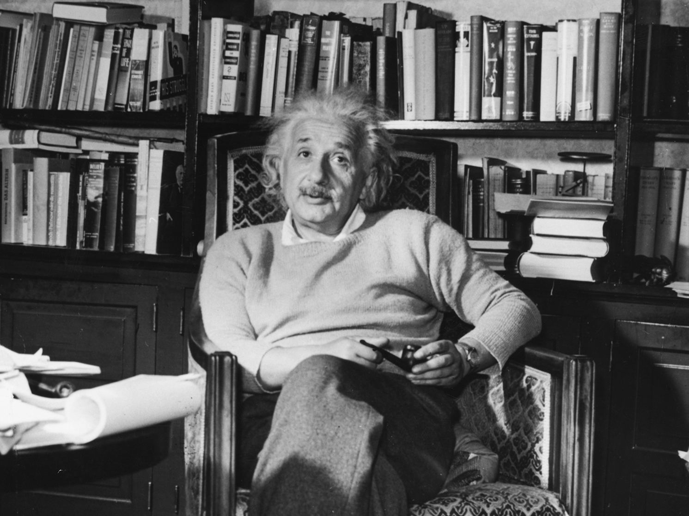

Albert Einstein
"Anyone who has never made a mistake has never tried anything new."

Albert Einstein is considered one of the most influential physicists of the 20th century for developing the general theory of relativity and the formula E=MC2, which related mass and energy - and led to the discovery of atomic energy.
Here's a time line of Albert Einstein life:
- 1879 - Albert Einstein was born at Ulm, in Württemberg, Germany;
- 1896 - Einstein entered the Swiss Federal Polytechnic School in Zurich to be trained as a teacher in physics and mathematics;
- 1905 - He obtained his doctor's degree;
- 1909 - Became Professor Extraordinary at Zurich, in 1911 Professor of Theoretical Physics at Prague;
- 1933 - Renounced his citizenship for political reasons and emigrated to America to take the position of Professor of Theoretical Physics at Princeton*. He became a United States citizen in 1940 and retired from his post in 1945;
- 1955 - He dies at age of 76;